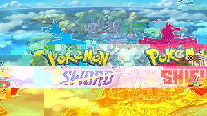
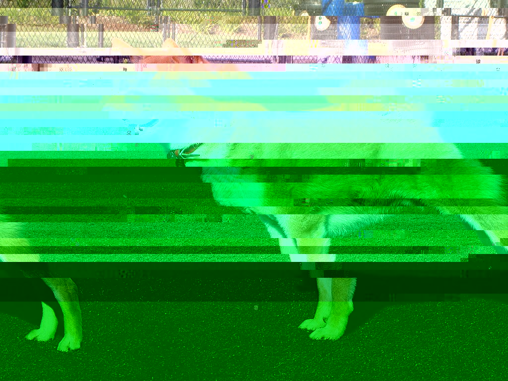

Star Wars Battlefront 2 is best known for having the most infamous reputation of EA's repertoire of games. The reason why I chose to do glitch art on this game is because it initially ruined a lot of people's experiences on the game to the point that it was unplayable. When the game first came out it was riddled with microtransactions and pay to win mechanics that caused an uproar in the gaming community. It got to the point that the backlash made EA backtrack on their decision to make the game pay to win by making it easier to obtain hero characters.
Pokémon Sword and Shield were know on the internet to have a lot of problems. From lying about making original 3D models to the low texture trees. It was also a problematic game in the first place because it removed the National Dex which removed some of people's favorite Pokémon from previous generations of the game. I distorted it this way because it conveys the worst of this generation and the following Pokémon games to come.
Shiba Inus are considered to be the cutest breeds to take care of. However, they are very tough to keep control of due to how much attention they need to grow closer to you. I distorted this picture in this way because it shows the hardships and difficulty of taming a Shiba to your advantage.